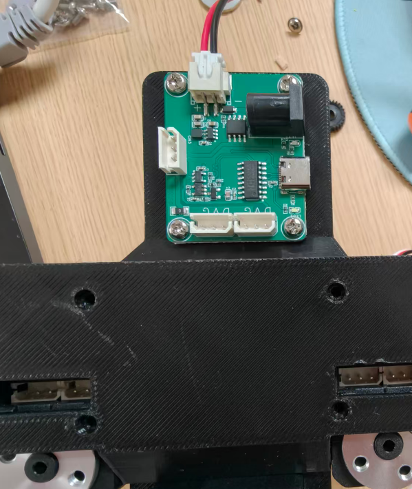
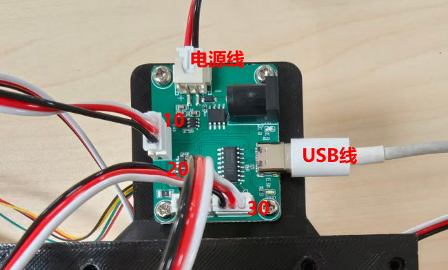

<!DOCTYPE lake>
<p data-lake-id="u95c562b9" id="u95c562b9"><span data-lake-id="u5088deb3" id="u5088deb3">从正面看，将舵机驱动板固定在躯干支架上面</span></p><p data-lake-id="ue001c9c9" id="ue001c9c9"><br/></p><p data-lake-id="u9180a8bb" id="u9180a8bb"><br/></p><p data-lake-id="uaa6b44d9" id="uaa6b44d9"></p><p data-lake-id="ub43bb3ce" id="ub43bb3ce"><br/></p><p data-lake-id="ua4474123" id="ua4474123"><span data-lake-id="ufa169403" id="ufa169403">将10,20,30号电机的线插在舵机驱动板上面</span></p><p data-lake-id="ud483484b" id="ud483484b"><span data-lake-id="u3c9c7134" id="u3c9c7134">将USB线插到USB口上面</span></p><p data-lake-id="u47cafbbb" id="u47cafbbb"><span data-lake-id="uecb0066f" id="uecb0066f">将电源线插到电源口上面</span></p><p data-lake-id="u65239bf2" id="u65239bf2"></p>